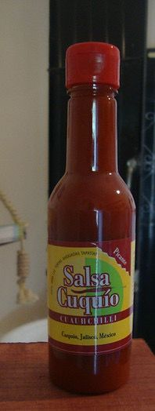

Esta es una de las secciones más importantes de la página, ya que si visitas Cuquío no te puedes perder estos exquisitos platillos, no solo porque sean delisciosos, si no porque no lograrás encontrarlos en otro lugar del mundo, ya que las recetas se crearon aquí hace muchos años.
Panaderia Polvoras "LAS COTORRAS Y EMPANOCHADAS"
Hace mucho tiempo abrió en Cuquío una panadería, su dueño era conocido como Don Juan Pólvoras y a su establecimiento acudían diariamente un gran número de personas que acostumbraban a disfrutar de tan exquisito producto, otras, general mente mujeres, aprovechaban sus visitas al dicho establecimiento para lograr cruzar un par de palabras con su romeo, que suspiraba al intercalar miradas mientras mordían una concha o un puerquito. Don Juan, aconsejado por la experiencia, comenzó a realizar pruebas, buscando la innovación y la mejor calidad para sus clientes, fue así como frente a los hornos ardientes de la panadería de Cuquío, nació un pan que gustaría mucho en toda la región, era de media luna, con relleno dulce y suave que dejaba satisfecho incluso a los paladares más exigentes. Fue así como surgió “La Cotorra” el pan tradicional de nuestro pueblo. De igual manera surgió el Huarache y la empanochada, piezas que debes probar si vienes a Cuquío.
Tortas de Pozole "Las Blancas"
El 12 de diciembre de 1955 Doña Romana inició un puesto de comida en lo que hoy es la plaza de la juventud, su especialidad era el pozole y las tostadas, ambos exquisitos, en este mismo lugar surgió un alimento muy típico de Cuquío, La torta en pozole, es un lonche abierto colocado sobre el plato, arreglado con la carne misma de ese platillo y bañado en abundante caldo de pozole. Hoy en día es obligatorio pasar por el puesto de doña Ana y Blanca Sánchez que se encuentra en el mercado municipal y donde se conserva al sabor típico de esta región.
Churros Don Tadeo
Otro producto que es típico y artesanal son los churros de Don Tadeo, a quien su padre, le enseñó a prepararlos ya hace mucho tiempo. Estos se pueden adquirir en la plaza principal o en el barrio del rincon.

Salsa Cuquio
Cuquío ha sido un importante productor de chile de árbol desde hace ya algunas décadas, el producto es además de gran calidad, por tal motivo la salsa especial que se fabrica en el pueblo es una receta que se creó en Cuquío y conserva el sabor del hogar.

Ponche de frutas Cuquio
La riqueza natural de Cuquío y los múltiples árboles frutales dieron pie a que se crearan recetas especiales, tal es el caso del ponche de Granada, Jamaica, entre otros. Bebida que surgió en el barrio del rincón uno de los más antiguos de este pueblo. Lo puedes encontrar en panadería Don Juan pólvoras